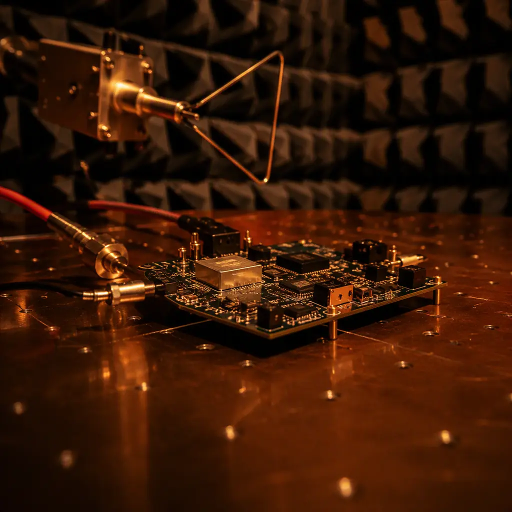
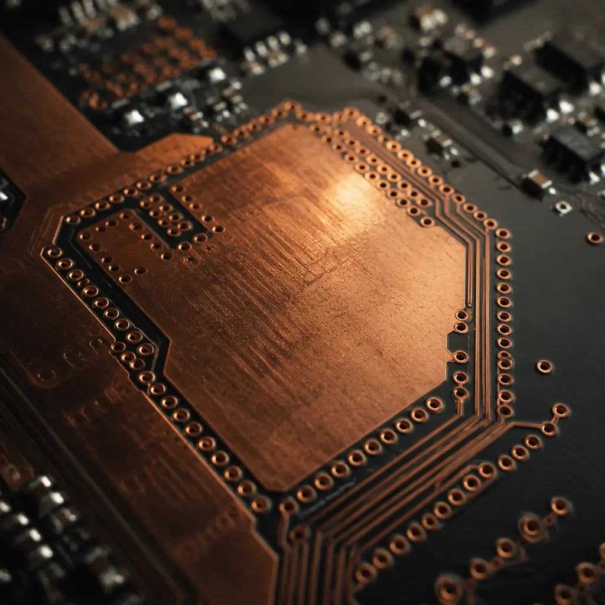

EMC compliance testing is where PCB projects go to die — not because the design was wrong, but because EMC was treated as a testing problem instead of a design problem. A failed FCC Part 15 or CE EN 55032 radiated emissions scan at a certified lab costs $2,000–5,000 per attempt, adds 4–8 weeks to your schedule, and sends you back to the PCB layout tool to add ferrite beads, copper tape, and shield cans that should have been there from the start. This guide covers the PCB-level design decisions that determine whether you pass EMC on the first submission or fight emissions for months.
At Huaxing PCBA, we manufacture PCBs for applications where EMC compliance is non-negotiable — medical devices requiring IEC 60601-1-2, automotive ECUs tested to CISPR 25, industrial controllers under EN 61000-6-2/4, and IoT products that need both FCC and CE marks. Our controlled impedance manufacturing capability supports the precise trace geometries that high-speed and EMI-sensitive designs require, with ±10% impedance tolerance on differential pairs up to 12 layers.

EMC 101: The Difference Between Emissions and Immunity — and Why Your PCB Affects Both
EMC (electromagnetic compatibility) covers two directions: emissions (your PCB radiating noise that interferes with other devices) and immunity (external noise interfering with your PCB). Both are PCB-level problems. A switching power supply with a 10cm input loop creates a magnetic dipole antenna that radiates efficiently at harmonics of the switching frequency. A microcontroller with a 50MHz clock and no ground reference plane creates common-mode currents that turn every cable into an unintentional antenna. Here is what you are up against by frequency range:
| Frequency Range | Primary Concern | PCB Root Cause | Test Standard |
|---|---|---|---|
| 150 kHz – 30 MHz | Conducted emissions (power lines) | Switching PSU noise coupling to input, inadequate CM filtering | FCC Part 15.107 / CISPR 11/32 |
| 30 MHz – 300 MHz | Radiated emissions (cable radiation) | Common-mode currents on I/O cables, poor ground referencing | FCC Part 15.109 / CISPR 11/32 |
| 300 MHz – 1 GHz | Radiated emissions (PCB direct) | Clock harmonics, gap in return path, slot antenna in reference plane | FCC Part 15.109 / CISPR 11/32 |
| 1 GHz – 6 GHz | Radiated emissions (IC-level) | Package-level radiation, inadequate decoupling, heatsink resonance | CISPR 32 (above 1 GHz) |
| ESD (transient) | Immunity — system crash/reset | No ESD protection, chassis ground not bonded to PCB ground | IEC 61000-4-2 (±8kV contact) |
| Burst/Surge (transient) | Immunity — data corruption | Inadequate I/O filtering, no TVS clamping on external connectors | IEC 61000-4-4/4-5 |
Key Takeaway: The 10 dB rule in EMC: every 10 dB of margin you add during PCB design saves approximately $10,000 and 4 weeks of re-spin cost during compliance testing. A ground plane that is 100mm² larger, a decoupling capacitor placed 5mm closer to the IC power pin, a return via stitched 2mm from a high-speed signal via — these are essentially free changes during layout that become $500–2,000 shield-can-and-ferrite-band-aids after testing.
Stackup Strategy: The Foundation of Every EMC-Compliant Board
The PCB stackup is the single most important EMC decision you make — and it is made before a single trace is routed. A bad stackup cannot be fixed with more filtering or shielding; it creates electromagnetic problems at the physics level. Here are the stackup rules that EMC engineers live by:
Every Signal Layer Must Be Adjacent to a Continuous Reference Plane
High-speed signals return current follows the path of least impedance — which, above a few kHz, is the path of least inductance. That means return current flows directly under the signal trace on the adjacent reference plane, in the opposite direction. If that plane has a gap (slot, split, or void), the return current must detour around it, creating a loop antenna that radiates. The rule: never route a high-speed signal (clock, data bus, SPI, USB) across a plane split. If a plane must be split (e.g., analog vs digital ground on the same layer), route signals only over their own continuous section of the plane. For 4-layer boards, use the standard stackup: Signal-GND-PWR-Signal — this gives every signal layer an adjacent reference plane. Our stackup design guide covers the trade-offs between standard and advanced stackup configurations.
Decrease the Signal-to-Plane Spacing on High-Speed Layers
The tighter the coupling between a signal trace and its reference plane, the more the return current is confined directly under the trace — and the less it spreads laterally (reducing crosstalk and emissions). For a 4-layer 1.6mm board, the standard prepreg between L1 (signal) and L2 (GND) is typically 0.2mm. Reducing this to 0.1mm cuts the loop area in half and reduces radiated emissions by approximately 6 dB. The trade-off: thinner dielectric lowers the trace impedance, requiring narrower traces to maintain 50Ω — check with your fabricator that they can etch the resulting trace width reliably.
6-Layer Minimum for Mixed-Signal Designs
A 4-layer board with analog and digital sections is an EMC compromise: you either split the ground plane (creating return path discontinuities) or share one plane (coupling digital noise into analog circuits). A 6-layer stackup — Signal-GND-Signal-PWR-GND-Signal — gives you two continuous ground planes that can be stitched together with vias, providing isolation through physical separation rather than plane splitting. The marginal cost of 6-layer over 4-layer is approximately 20–30%; the cost of one failed EMC test cycle is far higher. Our impedance control guide covers the fabrication precision needed for controlled-impedance stackups.
Power-Ground Plane Pair as a Distributed Decoupling Capacitor
When the power and ground planes on adjacent layers are separated by a thin dielectric (0.1–0.2mm), they form a distributed capacitor with very low inductance — typically 100–500 pF per cm² depending on dielectric constant and thickness. This plane capacitance provides decoupling at frequencies up to 200–300 MHz with zero inductance penalty (no via inductance, no mounting inductance). To maximize this effect: place power and ground planes on adjacent layers (L2–L3 or L4–L5, depending on stackup) with the thinnest prepreg your fabricator supports, and minimize the number of anti-pads (clearance holes) that reduce the effective plate area.
Ground Plane Design: Stitching, Guard Traces, and Split Planes
The ground plane is not passive — it actively shapes the electromagnetic fields around every signal. Getting it wrong creates antennas; getting it right contains fields. Here are the rules that eliminate the most common ground-plane-related EMC failures:
Stitch Ground Planes with Vias Every λ/20 Along the Board Edge
A PCB edge is a natural radiating aperture — when a signal's return current reaches the board edge and has nowhere to go, the field fringes out into free space. Ground stitching vias (also called via fences or picket fences) placed every λ/20 at the highest frequency of concern along the board perimeter create a low-impedance path that suppresses edge radiation. For a design with harmonics up to 1 GHz, λ/20 = 15mm in FR-4 — place ground vias every 10–12mm along all board edges. Stitch all ground planes together at these vias, not just the top and bottom layers.
Via Stitching at Layer Transitions — Every Signal Via Needs a Return Via Within 2mm
When a high-speed signal changes layers (e.g., L1 → L3), the return current must also change reference planes (L2 → L4 ground). Without a nearby ground-to-ground stitching via, the return current finds its own path — typically through the nearest decoupling capacitor, which might be 10–20mm away, creating a large loop. Place a ground stitching via within 2mm of every signal layer-transition via, connecting all ground planes. This is the single most effective design rule for reducing emissions from multi-layer boards. Our via technology guide covers via types and placement strategies.
Avoid Floating Copper — Every Copper Feature Must Be Referenced
Unconnected copper pours, thermal thieving patterns, and orphaned copper islands on signal layers act as parasitic antennas — they capacitively couple to nearby signals and re-radiate at their resonant frequency. During PCB layout, run a design rule check for unconnected copper and either remove these features or connect them to ground through vias. Thermal thieving patterns on inner layers should be electrically connected to the nearest reference plane through a grid of vias — an unconnected thieving pattern on an inner layer is a floating metal plane that will resonate.

Decoupling and Filtering: Component Placement Matters More Than Component Values
The standard advice — "place a 100nF capacitor near every IC power pin" — is correct in principle but misses the critical detail: the inductance of the connection between the capacitor and the IC power pin is what determines decoupling effectiveness, not the capacitance value. Above approximately 50 MHz, the impedance of a 100nF MLCC is dominated by its mounting inductance (approximately 0.5–1 nH for a well-placed 0402 capacitor), making the capacitance value almost irrelevant:
Place Decoupling Capacitors on the Same Layer as the IC — No Vias to Power Pins
The highest-frequency decoupling path is: IC power pin → capacitor pad → capacitor → capacitor ground pad → IC ground pin. Every via in this path adds approximately 0.5–0.8 nH of inductance. A route with two vias (one to a power plane, one to a ground plane) adds 1.0–1.6 nH — raising the impedance at 100 MHz from ~0.8Ω to ~1.8Ω. The preferred layout: place the capacitor on the same layer as the IC, route the power trace directly from the IC pin to the capacitor pad (no vias), then connect the capacitor's ground pad directly to the IC's ground pad with a short trace, and drop a via to the ground plane at the capacitor's ground pad only.
Use Multiple Capacitor Values in Parallel — But Only If They Are Physically Separated
Placing a 10µF, 100nF, and 1nF capacitor in parallel on the same IC power pin creates an anti-resonance peak where the inductive region of the larger capacitor resonates with the capacitive region of the smaller one, creating a high-impedance spike at some mid-frequency (typically 10–50 MHz). The fix: separate the capacitor values physically — place the smallest capacitor (1nF, 0201 or 0402) closest to the IC pin for the highest-frequency decoupling, place a 100nF a few mm away for mid-frequency, and place the bulk 10µF capacitor further out where its higher ESL is not a problem. The physical separation prevents the anti-resonance interaction.
Ferrite Beads on Power Inputs — Choose the Right Impedance at the Noise Frequency
A ferrite bead is a frequency-dependent resistor: it looks like a short circuit at DC, an inductor at low frequencies, and a resistor (typically 100–1,000Ω) at its specified frequency. The mistake: choosing a bead based on its DC current rating alone. A bead rated for 3A at 100Ω at 100 MHz provides 100Ω of series impedance at 100 MHz — but only 20–30Ω at 50 MHz, where your switching converter's fundamental might be radiating. Match the bead's impedance curve to your noise frequency, not its current rating. And always place a capacitor after the bead (toward the load), not before — a capacitor before the bead creates an LC resonator that can amplify the noise. For high-current supply filtering, see our power electronics PCB guide.
Shielding: When to Use Shield Cans — and When You Shouldn't Need To
A shield can is an admission that the PCB layout didn't control electromagnetic fields adequately at the board level. That said, for compact designs with multiple radios (WiFi + Bluetooth + cellular + GPS on one board), shielding becomes inevitable. The key is to make shielding effective rather than adding a metal box that resonates:
Shield Can Grounding — Continuous Perimeter Contact, Not Corner Tabs Only
A shield can that contacts the PCB ground plane only at four corner tabs forms a cavity resonator — the gap between tabs acts as a slot antenna, and the can itself becomes a resonant structure at frequencies where the slot length approaches λ/2. The fix: specify a continuous ground contact along the entire perimeter of the shield can footprint, with a solderable surface (ENIG or HASL) and a ground via stitched every 2–3mm along the shield perimeter to the inner ground plane. The via spacing is critical: at 6 GHz, λ/20 in FR-4 is approximately 2.5mm — vias spaced wider than this act as a slot array.
Internal Shields — Route Sensitive Signals on Inner Layers, Use Outer Layers as Shield
Instead of adding a shield can, bury sensitive signals on inner layers with solid ground planes above and below. A stripline configuration (signal trace between two ground planes) provides approximately 15–20 dB more isolation than a microstrip (signal on outer layer, one ground plane below). The trade-off: stripline requires a 6+ layer board and has higher dielectric loss, but the emissions reduction is free — no additional BOM cost, no assembly step. This is the preferred approach for clock distribution, high-speed serial links (PCIe, USB 3, SATA), and analog sensor front-ends. Our RF PCB design guide covers controlled-impedance routing for sensitive signals.
Pre-Compliance Testing: Find Failures Before the Certified Lab Does
Pre-compliance testing doesn't require a $100K anechoic chamber. A near-field probe set ($200–500) and a spectrum analyzer (or oscilloscope with FFT, or even an RTL-SDR dongle for $30) can identify the top 80% of emissions problems before you book lab time:
Near-Field Scanning: Find the Hot Spots in 30 Minutes
With the board running normally, scan a near-field H-field (magnetic) probe 1–2mm above the board surface while watching the spectrum analyzer. The probe will show emission peaks at clock harmonics, switching converter frequencies, and data bus activity. Mark the physical locations of the highest peaks — these are where layout changes (better decoupling, ground stitching, or shielding) will have the most impact. The near-field scan doesn't give you absolute field strength numbers that correlate to FCC limits, but the relative comparison (before/after a layout change) is extremely reliable for identifying whether a fix worked.
Conducted Emissions: Use a LISN (Line Impedance Stabilization Network)
A LISN ($200–800) provides a standardized impedance (50Ω) on the AC mains input and a measurement port for the spectrum analyzer. This replicates the conducted emissions test setup in CISPR 32/FCC Part 15. Connect the LISN between your product's AC input and the wall outlet, and measure the RF voltage at the LISN's measurement port from 150 kHz to 30 MHz. The common-mode choke and X-capacitor values on your input filter determine what you see here — adjust them until the envelope is below the limit line with at least 6 dB margin.
EMC Design Checklist: Before You Send Gerber Files to Manufacturing
No High-Speed Signals Crossing Plane Splits — DRC Verify This
Run a design rule that checks every high-speed net against all plane splits on adjacent reference layers. A single clock trace crossing a split in the ground plane can produce 10–15 dB higher emissions at its harmonics. Most PCB CAD tools can run this check automatically — if yours cannot, manually review every layer transition and every area where the reference plane changes. Controlled impedance routing is the first line of defense.
Return Via Within 2mm of Every Signal Layer-Transition Via
Count your layer-transition vias and your ground stitching vias near them. If the ratio is less than 1:1 (one ground via per signal transition via), you have unmanaged return current paths that will radiate. This is especially critical for high-speed differential pairs (USB, HDMI, PCIe) that transition layers — each pair's transition needs its own ground stitching via.
I/O Connectors Have Filtering at the Connector, Not at the IC
EMC filtering (TVS diodes, common-mode chokes, series ferrite beads) on I/O lines must be placed within 5mm of the connector pin, not near the IC that drives the signal. Placing filter components near the IC leaves a 50–100mm trace between the filter and the connector — which becomes an antenna that radiates whatever noise the filter was supposed to suppress. This is one of the most common EMC layout mistakes.
Chassis Ground and PCB Ground Bonded at One Point — Near the I/O Connectors
The chassis ground (metal enclosure, connector shells, shield terminations) and PCB digital ground must be connected at a single low-impedance point, typically near the I/O connector area. This provides a controlled path for common-mode currents to return to their source without flowing through the PCB, reducing cable radiation by 10–20 dB. Use multiple parallel connections (screws, grounding springs, conductive gaskets) to minimize inductance — a single wire connection has too much inductance to be effective above 30 MHz.
Summary: EMC Is a PCB Design Discipline, Not a Testing Hurdle
The cost difference between designing for EMC compliance from the start and retrofitting after a failed test is measured in weeks of schedule delay and thousands of dollars in re-spin costs — per test cycle. A 6-layer stackup, ground via stitching, proper decoupling placement, and I/O filtering at the connector add perhaps 5–10% to the PCB fabrication cost. One failed EMC test cycle costs 10–20× that amount in lab fees, engineering time, and delayed product launch. The math is unambiguous.
At Huaxing PCBA, we support EMC-conscious PCB designs with controlled impedance manufacturing (±10% tolerance), 4–12 layer stackups with thin dielectrics down to 0.1mm, and full design-rule-check verification before fabrication. Read our RF PCB design guide for high-frequency layout considerations, or send us your Gerber files for a DFM review including impedance and manufacturability feedback within 24 hours.